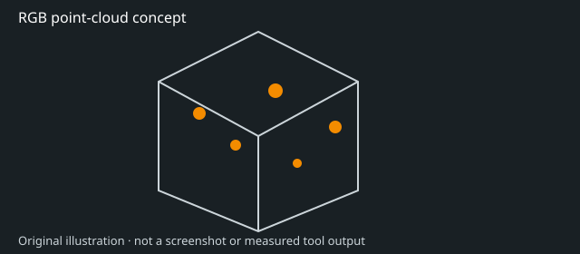

Community discoveries · DCTL
3D Cube DCTL and Cube Slice
By MONONODES
Visualizes image pixels as an RGB point cloud. Cube Slice supplies color patches for inspecting how node operations reshape the cube. Downloads are linked by the creator; original distribution terms apply.
At a glance
Documented for Resolve Studio on Windows, macOS, Linux with version range 19.1+. Unknown requirements are not treated as incompatible.

Compatibility
- Platforms
- Windows · macOS · Linux
- Platform caveats
- Windows · macOS · Linux
- Resolve edition
- Studio
- Resolve version
- 19.1+
- Architecture
- Not established
Unknown means not established, not unsupported. Edition and version limits can differ by feature; consult the linked evidence.
Documentation completeness
4 / 7 fields established
- Platforms — Established · Source documented
- Resolve version — Established · Source documented
- Resolve edition — Established · Source documented
- Architecture — Unknown
- Processing — Unknown
- Tool version — Established · Source documented
- Installation — Unknown
Coverage describes recorded evidence, not an installation test.
Requirements
- GPU
- Not established
- Dependencies
- Not established
- Installation
- Not established
- Account
- Not established
- Processing
- Not established
Pricing and access
- Access
- 🆓 Free download
- Payment model
- free
Check the creator site for current pricing and licence terms.
Version and activity
- Tool version
- 1.1
- Latest field review
- 2026-09-08
Tasks
- Color & film looks
Version history
No version changes recorded yet.
Referenced in catalogue releases: v1.20
Similar alternatives
Alternatives sharing a specific capability:
Scroll sideways or use the arrow keys to see more columns.
| Tool | Format | Access | Edition | Platforms | Evidence |
|---|---|---|---|---|---|
| utility-dctls | DCTL | Free | Not established | Windows · macOS | 2/7 |
| DCTL | DCTL | Free | Not established | Not established | 1/7 |
| MediaInfo | Workflow app | 🆓 Free and open source | Not established | Not established | 1/7 |
Compatibility is specific to each tool; unknown fields are not treated as incompatible.
Works well together
No curated complementary relationship is recorded for this resource. Shared format alone does not establish a useful combination.
Sources and limitations
- platforms — Source documented
Original source · checked 2026-09-08Provider-listed platforms; see limitations and exact builds.
- version — Source documented
Original source · checked 2026-09-08Recorded version evidence, not installation testing.
- requirements — Source documented
Original source · checked 2026-09-08Visualizes image pixels as an RGB point cloud. Cube Slice supplies color patches for inspecting how node operations reshape the cube. Downloads are linked by the creator; original distribution terms apply.
- requirements — Source documented
Original source · checked 2026-09-08Creator FAQ requires Resolve Studio 19.1+ for DCTLs and lists Windows, macOS and Linux.